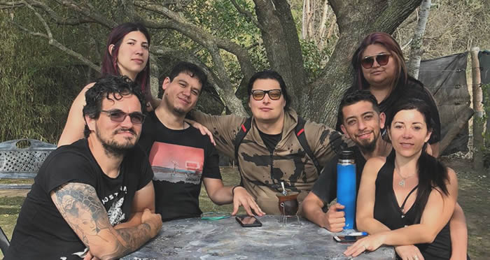
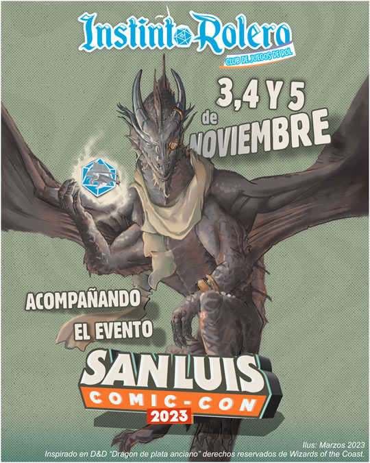

Quienes somos
Somos un grupo de jóvenes merlinos interesados en la difusión y revalorización de los juegos de mesa, y papel y lápiz. Nos especializamos en juegos de Rol, a través de sus sistemas más populares, pasando por sistemas de nicho y propios.

Eventos
En apenas un mes desde su concepción Instinto Rolero participó en una serie de eventos en la región de Cuyo. Desde su ciudad de origen en Villa de Merlo, San Luis, hasta Rio Cuarto y Villa Las Rosas en Traslasierra, Córdoba. Ademas tiene un calendario fijo de encuentros en un centro cultural de Merlo, con un gran caudal de participantes.
Durante el resto de 2023 seguiremos participando en distintos eventos temáticos a lo largo de la provincia de San Luis y Córdoba, además de acciones sociales y eventos culturales en nuestra ciudad.
Contamos con varios narradores con décadas de experiencia en juegos de rol y materiales para montar y desarrollar actividades en eventos de pequeña y gran magnitud. Desde actividades de pocas horas hasta eventos que se desarrollen a lo largo de varios días.
Un evento actual en el que participaremos proximamente es San Luis Comicon en el Arenas de la Punta. ¡No te lo pierdas!

Partidas
Tenemos en nuestro haber numerosas partidas jugadas y creadas con sistemas propios y sistemas conocidos como la llamada del Cuthulhu (tanto sistema de 100 como de 20), Dungeons & Dragons, Pathfinder, Hombre lobo, Vampiros la mascarada y edad oscura. Nos encanta incorporar nuevos jugadores que importen al juego su impronta y capacidades que renuevan el juego.